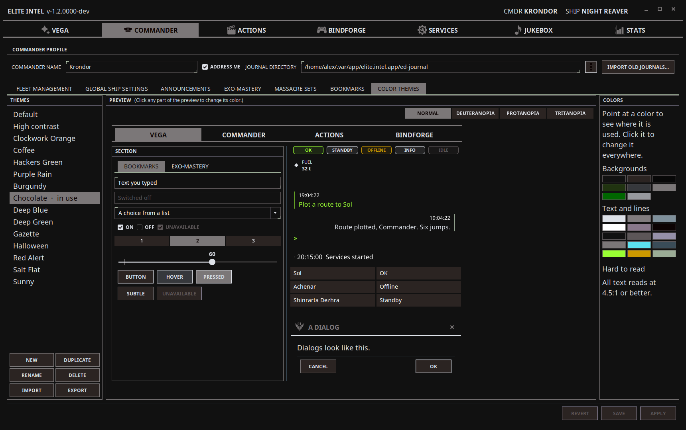
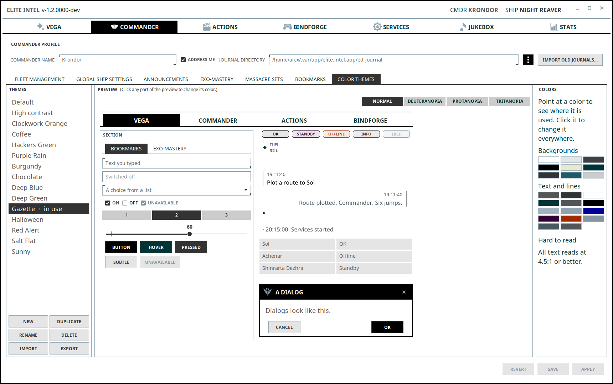

Temas de color
 Comandante → Temas de color:
los colores con los que se dibuja la ventana de la app. Elige uno de los temas integrados, crea el tuyo o
descarga uno más abajo.
Comandante → Temas de color:
los colores con los que se dibuja la ventana de la app. Elige uno de los temas integrados, crea el tuyo o
descarga uno más abajo.

Los colores predeterminados ya están ajustados para comandantes con daltonismo: el verde, el azul y el rojo de OK, en espera y peligro se distinguen con los tipos de daltonismo más comunes, y todo el texto llega a 4,5:1 de contraste con su fondo. Si aun así no van con tu vista o tu pantalla, crea el tuyo.
El overlay HUD no forma parte de un tema. Tiene sus propios colores, en sus propios ajustes.
Temas integrados
- Predeterminado: los colores ajustados que se describen arriba.
- Alto contraste, para baja visión o reflejos: fondos negros, texto blanco, marcos más claros y todo el texto a 7:1 o más.
- Clockwork Orange: naranja como el HUD del propio juego, y como la app antes de la V1.2.
- Coffee: marrones cálidos y crema.
- Hackers Green: verde sobre negro, como un terminal antiguo.
- Purple Rain: violeta sobre casi negro.
- Red Alert: rojo sobre negro.
Predeterminado y Alto contraste están hechos para leerse con facilidad. Los demás están hechos por su aspecto: no están ajustados para el daltonismo.
Los temas integrados no se pueden cambiar: tu primer cambio en uno va a una copia.
Alto contraste

Clockwork Orange

Coffee

Hackers Green

Purple Rain

Red Alert

Crear el tuyo
- Haz clic en cualquier parte de la vista previa para cambiar su color. La vista previa la dibuja la propia app, así que se ve exactamente como se verá la app. Si otras partes comparten ese color, eliges: Todas las partes con ese color o Solo esta parte.
- Señala una parte de la vista previa, o uno de los Colores de la derecha, y todo lo demás se oscurece, para que veas dónde se usa ese color. Hacer clic en un color lo cambia en todas partes.
- Ver como muestra la vista previa como la ve alguien con deuteranopía, protanopía o tritanopía, para que compruebes un tema antes de compartirlo.
- Difícil de leer lista el texto que tu tema hace difícil de leer, con su contraste. Haz clic en uno para corregirlo, o en Corregir todo: el color se aclara u oscurece lo justo para leerse. Es solo un aviso: nada te impide guardar.
- Guardar conserva tus cambios. Aplicar guarda y lo convierte en el tema en uso. La app lee sus colores al arrancar, así que ofrece reiniciarse.
Bajo la lista están Nuevo, Duplicar, Renombrar y Eliminar, además de Importar y Exportar para compartir (más abajo).
Tus temas se guardan con los datos de la app, así que Copia de ajustes y datos los incluye.
Compartir temas
- Exportar escribe el tema seleccionado en un archivo para compartirlo, tal como se ve ahora, cambios sin guardar incluidos.
- Importar añade un tema que alguien compartió contigo. Si ya tienes uno con ese nombre, eliges: Reemplazarlo o Conservar ambos.
¿Hiciste uno que te gusta? Compártelo en Matrix.
Descargar más temas
Ocho temas más para probar. Descarga uno y luego, en Comandante → Temas de color, haz clic en Importar, elige el archivo y pulsa Aplicar. Están hechos por su aspecto: no están ajustados para el daltonismo. Gazette, Salt Flat y Sunny son temas claros.
Descomprímelo primero: Importar acepta un archivo de tema cada vez.
Burgundy

Texto verde pálido sobre burdeos oscuro, con marcos malva. ⬇ Burgundy.json
Chocolate

Blanco suave y gris sobre casi negro. ⬇ Chocolate.json
Deep Blue

Azules sobre azul medianoche. ⬇ Deep-Blue.json
Deep Green

Verdes vivos sobre negro. ⬇ Deep-Green.json
Gazette

Tinta negra sobre papel blanco, como un periódico. ⬇ Gazette.json
Halloween

Naranja calabaza sobre marrón oscuro. ⬇ Halloween.json
Salt Flat

Gris pizarra sobre gris azulado pálido. ⬇ Salt-Flat.json
Sunny

Negro y beige sobre crema pálido. ⬇ Sunny.json
Community 👉Matrix👈